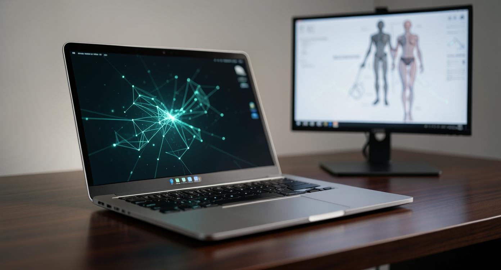
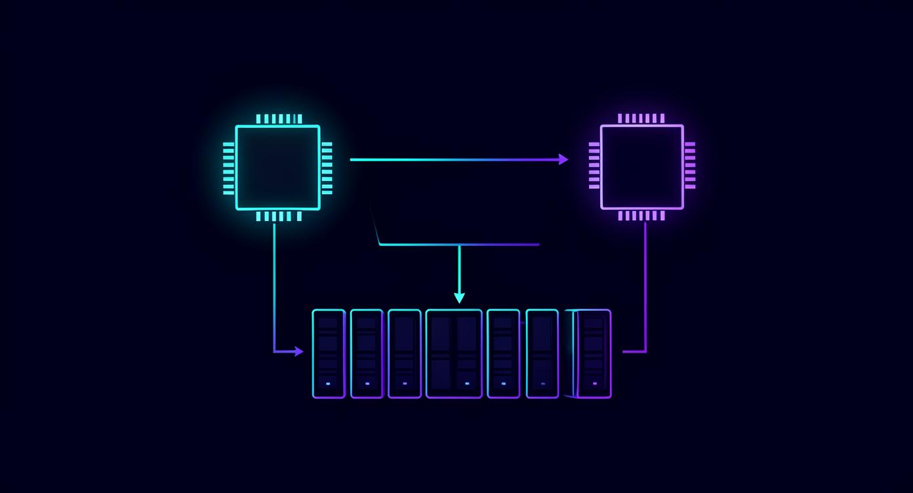
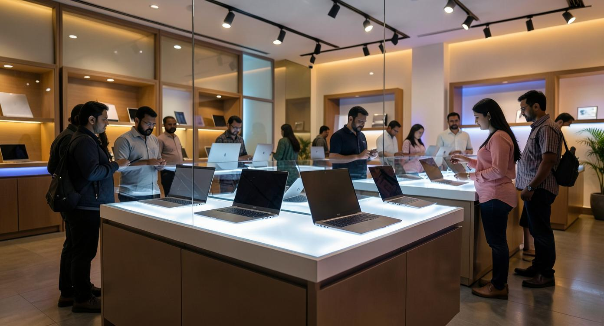

NVIDIA RTX Spark India: AI Laptop ki Nayi Generation, Price aur Full Guide

22 नवंबर 2026 को नई दिल्ली में NVIDIA ने अपना नया RTX Spark प्लेटफॉर्म भारत में दिखाया। साथ में ASUS, Dell, HP, Lenovo और MSI ने अपने-अपने लैपटॉप और छोटे डेस्कटॉप स्टेज पर रखे। खबर सुनने में यह एक और लैपटॉप लॉन्च लगती है, लेकिन असल में यह Windows PC के अंदर की बनावट बदलने की कोशिश है — ऐसा PC जिसमें CPU और GPU एक ही बड़ी मेमोरी पूल शेयर करते हैं, ठीक वैसे जैसे Apple अपने M-series चिप में करता है।
अगर आप AI मॉडल अपने लैपटॉप पर चलाना चाहते हैं, 4K वीडियो एडिट करते हैं या 3D सीन रेंडर करते हैं, तो यह लॉन्च आपके लिए सीधे मायने रखता है। और अगर आप सिर्फ सस्ता गेमिंग लैपटॉप ढूँढ रहे हैं, तो इस आर्टिकल के आखिर तक पढ़िए — क्योंकि ₹3 लाख से शुरू होने वाली यह मशीन आपके बजट की नहीं है। नीचे पूरी डिटेल है: RTX Spark तकनीक क्या है, भारत में कौन-कौन से मॉडल आए हैं, कितनी कीमत है, कब मिलेंगे और किसे सच में खरीदना चाहिए।
छोटा जवाब: RTX Spark NVIDIA का नया Windows PC प्लेटफॉर्म है जिसमें Blackwell RTX GPU और Grace CPU एक साथ हैं, और दोनों 24GB से 128GB तक की unified memory शेयर करते हैं। भारत में इसकी शुरुआती कीमत ₹2,99,399 (Lenovo Yoga Pro 9n) से शुरू होती है और ₹5,49,999 (HP OmniBook Ultra) तक जाती है। यह AI डेवलपर्स, वीडियो एडिटर्स और 3D आर्टिस्ट के लिए बना है, आम गेमर के लिए नहीं।
RTX Spark क्या है? आसान भाषा में
आम लैपटॉप में दो अलग-अलग मेमोरी होती हैं। एक सिस्टम RAM होती है, जिसे CPU इस्तेमाल करता है — जैसे 16GB DDR5। दूसरी GPU की अपनी VRAM होती है — जैसे 8GB GDDR6। दोनों के बीच डेटा कॉपी करने के लिए PCIe बस लगती है, और यही जगह अक्सर रुकावट बनती है।
RTX Spark में NVIDIA ने यह दीवार थोड़ी गिरा दी है। इसमें GPU और CPU एक ही memory pool देखते हैं, जो 24GB से लेकर 128GB तक जाता है। NVIDIA के मुताबिक इसमें Blackwell आर्किटेक्चर का RTX GPU, Grace CPU, CUDA, DLSS, TensorRT और FP4 में 1 petaflop तक AI परफॉर्मेंस शामिल है। यानी यह सिर्फ गेमिंग चिप नहीं, बल्कि एक छोटा AI वर्कस्टेशन है जो बैग में आ जाता है।
CPU और GPU एक ही छत के नीचे
इसे ऐसे समझिए: पहले CPU और GPU दो अलग कमरों में बैठे दो कर्मचारी थे, जिन्हें हर फाइल के लिए एक-दूसरे के कमरे में जाना पड़ता था। अब दोनों एक ही बड़े हॉल में बैठे हैं और एक ही अलमारी से फाइल निकालते हैं। फाइलें बड़ी हों तो भी दीवार पार करने का झंझट नहीं। AI मॉडल के लिए यही सबसे बड़ा फायदा है, क्योंकि मॉडल की हर परत को बार-बार मेमोरी से GPU तक ले जाना पड़ता है।
Unified memory इतना बड़ा मुद्दा क्यों है?
आज जो भी व्यक्ति अपने लैपटॉप पर बड़ा भाषा मॉडल चलाने की कोशिश करता है, उसकी सबसे बड़ी शिकायत एक ही होती है — "VRAM कम पड़ गई"। मान लीजिए आपके पास 8GB VRAM वाला लैपटॉप है और आप 30B पैरामीटर का मॉडल 4-bit में चलाना चाहते हैं। उसका वज़न लगभग 18-20GB बैठता है। 8GB में वह फिट ही नहीं होगा, चाहे आप कितनी भी ट्रिक लगा लें। अगर मशीन 64GB unified memory देती है, तो वही मॉडल आराम से लोड हो जाता है।
यही वजह है कि RTX Spark को सिर्फ "नया लैपटॉप चिप" कहना गलत होगा। यह उस वर्ग के लिए है जो पहले कहता था — "यह मॉडल मेरे लैपटॉप पर नहीं चलेगा, क्लाउड पर चलाना पड़ेगा"। अब वह काम स्थानीय तौर पर हो सकता है, और डेटा भी बाहर नहीं जाता। जिन लोगों का काम गोपनीय डेटा पर है — कानूनी फर्म, मेडिकल रिकॉर्ड, कंपनी के अंदरूनी दस्तावेज़ — उनके लिए यह बड़ी बात है।

लेकिन एक ज़रूरी बात
ज़्यादा मेमोरी का मतलब यह नहीं कि सब कुछ तेज़ हो जाएगा। मॉडल लोड होना और मॉडल का टोकन-दर-टोकन चलना दो अलग चीज़ें हैं। अगर memory bandwidth कम है, तो बड़ा मॉडल लोड तो हो जाएगा पर जवाब धीरे आएंगे। इसलिए सिर्फ "128GB" का पोस्टर देखकर खरीदारी न करें। असली सवाल यह है कि आप जिस मॉडल का नाम सोच रहे हैं, उसके लिए bandwidth और tokens per second कितने आ रहे हैं। यह जानकारी शुरुआती रिव्यू आने के बाद ही साफ होगी।
भारत में कौन-कौन से मॉडल और कितनी कीमत?
NVIDIA इंडिया इवेंट में जो शुरुआती कीमतें बताई गईं, वे इस प्रकार हैं। ध्यान रखें, ये "starting price" हैं — यानी सबसे कम मेमोरी वाला वेरिएंट। 64GB या 128GB वाला मॉडल चुनेंगे तो कीमत काफी ऊपर जाएगी।
| मॉडल | शुरुआती कीमत | किसके लिए |
|---|---|---|
| Lenovo Yoga Pro 9n | ₹2,99,399 | क्रिएटर और प्रीमियम यूज़र |
| ASUS ProArt P14 | ₹3,19,990 | पोर्टेबल AI + वीडियो एडिटिंग |
| ASUS ProArt P16 | ₹4,89,990 | बड़ी स्क्रीन, भारी 3D/AI काम |
| Dell XPS 16 Creator | ₹4,49,990 | डिज़ाइन + परफॉर्मेंस |
| HP OmniBook Ultra | ₹5,49,999 | प्रीमियम बिज़नेस और AI |
| MSI EdgeMesa N AI+ | ₹3,89,999 + GST | कॉम्पैक्ट डेस्कटॉप स्टाइल |
सबसे सस्ता विकल्प Lenovo है और सबसे महंगा HP। बीच में ASUS के दो मॉडल हैं, जिनमें P14 उन लोगों के लिए ठीक है जिन्हें रोज़ लैपटॉप ढोना पड़ता है। MSI का EdgeMesa एक अलग केटेगरी है — यह छोटा डेस्कटॉप जैसा है, इसलिए जो लोग लैपटॉप नहीं ढोते और टेबल पर ताकतवर मशीन चाहते हैं, उनके लिए यह सही रहेगा।
भारत में कब मिलेंगे?
Dell का XPS 16 Creator 20 नवंबर से उपलब्ध है, यानी इवेंट के वक्त ही बिक्री शुरू हो चुकी थी। HP की प्री-बुकिंग 24 नवंबर से शुरू होने की उम्मीद है। बाकी ब्रांड्स के लिए कंपनी ने "आने वाले हफ्तों" कहा है, कोई पक्की तारीख नहीं दी। अगर आप खरीदने की सोच रहे हैं तो पहले ब्रांड के आधिकारिक स्टोर पर स्टॉक चेक करें, क्योंकि शुरुआती बैच अक्सर सीमित होते हैं और बीच-बीच में "out of stock" दिखता है।

क्या यह गेमिंग लैपटॉप है?
नहीं, कम से कम शुरुआती मॉडल तो नहीं। ये पतले क्रिएटर लैपटॉप हैं, जिनमें बैटरी और वज़न को प्राथमिकता दी गई है। इनमें गेम चलेंगे, DLSS भी काम करेगा, लेकिन अगर आप सिर्फ गेमिंग के लिए ₹4 लाख खर्च करने की सोच रहे हैं तो यह पैसा बर्बादी है। उसी बजट में आप RTX 5080/5090 वाला मोटा गेमिंग लैपटॉप या एक अच्छा डेस्कटॉप बना सकते हैं, जो गेम में कहीं ज़्यादा फ्रेम देगा।
गेमिंग और AI workload में फर्क
गेमिंग में काम आता है — तेज़ क्लॉक, अच्छा कूलिंग, हाई रिफ्रेश रेट डिस्प्ले। AI में काम आता है — बड़ी मेमोरी, अच्छी bandwidth और स्थिर परफॉर्मेंस। दोनों की प्राथमिकताएँ अलग हैं। RTX Spark की पहली प्राथमिकता AI और क्रिएटिव वर्कलोड है, इसलिए इसे गेमिंग मशीन की तरह जज न करें।
किसे खरीदना चाहिए?
AI डेवलपर: जो लोकल मॉडल टेस्ट करते हैं, फाइन-ट्यूनिंग करते हैं या ऑफलाइन डेटा पर काम करते हैं। उनके लिए 64GB या 128GB वेरिएंट सच में गेम-चेंजर हो सकता है।
वीडियो एडिटर: जो 4K/8K फुटेज और AI-आधारित टूल्स (रिमोशन, अपस्केल, ट्रांसक्रिप्शन) रोज़ इस्तेमाल करते हैं।
3D आर्टिस्ट और आर्किटेक्ट: जिन्हें बड़े सीन रेंडर करने के लिए लंबे समय तक मशीन चाहिए।
प्राइवेसी-सेंसिटिव काम: वकील, डॉक्टर, अकाउंटेंट — जिनका डेटा क्लाउड पर नहीं भेजा जा सकता।
किसे नहीं खरीदना चाहिए
अगर आपका काम ब्राउज़िंग, ऑफिस, YouTube और हल्के गेम्स तक है, तो ₹3 लाख की मशीन लेना तर्कसंगत नहीं। उसी काम के लिए ₹50,000-₹70,000 का लैपटॉप काफी है। स्टूडेंट्स जो AI सीखना शुरू कर रहे हैं, उनके लिए क्लाउड GPU किराए पर लेना कहीं सस्ता पड़ेगा। और अगर आप सिर्फ GTA 6 जैसे भारी गेम के लिए मशीन ढूँढ रहे हैं, तो पहले GTA 6 PC requirements वाली गाइड पढ़ें — वहाँ बजट के हिसाब से सही रास्ता समझाया गया है।
खरीदने से पहले 7 चीज़ें ज़रूर चेक करें
- मेमोरी कॉन्फ़िगरेशन: 24GB, 64GB या 128GB — जो मॉडल आप चलाना चाहते हैं, उसका साइज़ पहले नाप लें। 24GB पर 30B मॉडल मुश्किल से चलेगा।
- Memory bandwidth: सिर्फ कैपेसिटी नहीं, स्पीड भी देखें। धीमी मेमोरी वाला 128GB, तेज़ 64GB से कम उपयोगी हो सकता है।
- FP4 परफॉर्मेंस: NVIDIA 1 petaflop FP4 का दावा करता है, लेकिन असली नंबर रिव्यू में आएँगे। डेमो के नहीं, बेंचमार्क के आधार पर फैसला करें।
- डिस्प्ले: क्रिएटर काम के लिए 100% sRGB/DCI-P3 कलर कवरेज और अच्छी ब्राइटनेस ज़रूरी है।
- थर्मल और फैन नॉइज़: पतले शरीर में लंबे रेंडर पर थ्रॉटलिंग आम है। रिव्यू में 30 मिनट का लगातार लोड वाला टेस्ट देखें।
- वारंटी और सर्विस: ₹4 लाख की मशीन पर 3 साल की ऑन-साइट वारंटी लें। भारत में सर्विस सेंटर की दूरी भी पूछ लें।
- बिल और GST: बिज़नेस के नाम पर खरीद रहे हैं तो GST इनवॉइस लें, वरना इनपुट क्रेडिट नहीं मिलेगा।
भारत में कीमत इतनी क्यों है?
तीन वजहें हैं। पहली, यह नई कैटेगरी है — शुरुआती बैच में R&D और कम प्रोडक्शन वॉल्यूम की लागत जुड़ी होती है। दूसरी, भारत में इलेक्ट्रॉनिक्स पर इम्पोर्ट ड्यूटी और GST जुड़ता है। तीसरी, ये मशीनें प्रीमियम सेगमेंट में बिक रही हैं, जहाँ ब्रांड मार्जिन भी ज़्यादा रखते हैं।
EMI और बिज़नेस खरीद
₹3-5 लाख की रकम एक बार में देना हर किसी के लिए आसान नहीं। ज़्यादातर ब्रांड 6-12 महीने की no-cost EMI देते हैं, लेकिन उसमें प्रोसेसिंग फीस छिपी होती है। बिज़नेस के लिए यह खर्च एक बार में लिखा जा सकता है, इसलिए CA से बात करके डेप्रिसिएशन का हिसाब लगवा लें।
सस्ता रास्ता क्या है?
अगर आपका AI काम महीने में कुछ घंटे का है, तो क्लाउड GPU किराए पर लें। घंटे के हिसाब से खर्च होता है और मशीन का पूरा पैसा एक बार में नहीं देना पड़ता। अगर काम रोज़ का है और डेटा लोकल रखना ज़रूरी है, तब स्थानीय मशीन समझ में आती है। बीच का रास्ता यह है कि पुराने लैपटॉप पर छोटे मॉडल चलाएँ और भारी काम क्लाउड पर भेजें।
एक और विकल्प डेस्कटॉप है। उसी बजट में RTX 5090 वाला डेस्कटॉप बनता है, जिसमें 32GB VRAM मिलती है। हाँ, वह पोर्टेबल नहीं है, पर प्रति रुपया परफॉर्मेंस बेहतर मिलती है। अगर आपकी टीम को हल्के AI टूल्स चाहिए, तो हमारे SHAVI AI जैसे फ्री टूल्स से भी काम चल जाता है।
मेरा नज़रिया
मैं इस लॉन्च को "गेमिंग लैपटॉप का नया दौर" नहीं, बल्कि "AI का लैपटॉप में घुसना" मानता हूँ। असली बदलाव यह है कि अब एक ऐसा Windows लैपटॉप मिलेगा जिसमें आप 70B क्लास का क्वांटाइज़्ड मॉडल लोकल चला सकते हैं। पाँच साल पहले यह बात सुनने में विज्ञान-कथा लगती थी।
लेकिन मेरी सलाह है — पहला बैच मत खरीदिए। वजह साफ है: ड्राइवर, फ्रेमवर्क सपोर्ट और बैटरी ऑप्टिमाइज़ेशन पहले कुछ महीनों में तेज़ी से सुधरते हैं, और कीमतें भी थोड़ी नरम पड़ती हैं। अगर आपके पास कोई डेडलाइन नहीं है, तो 3-6 महीने रुककर असली रिव्यू और कीमत दोनों देख लें। जो लोग आज खरीदेंगे, वे "early adopter" होंगे — फायदा भी उन्हीं को मिलेगा, पर प्रीमियम भी वही चुकाएँगे।
दूसरी बात, मेमोरी का नंबर देखकर भावुक मत होइए। 128GB सुनने में शानदार है, पर अगर आपका काम 8B-14B मॉडल तक सीमित है तो 24GB भी काफी है। पैसा उस चीज़ पर लगाइए जो आप रोज़ इस्तेमाल करेंगे — अच्छा डिस्प्ले, ठंडा कूलिंग, भरोसेमंद सर्विस।
अक्सर पूछे जाने वाले सवाल
RTX Spark किस चीज़ का नाम है — चिप या लैपटॉप?
दोनों के लिए इस्तेमाल हो रहा है। असल में यह NVIDIA का प्लेटफॉर्म है (CPU + GPU + memory), और ब्रांड इसी प्लेटफॉर्म पर अपने लैपटॉप बनाते हैं।
क्या RTX Spark Intel और AMD की जगह ले लेगा?
नहीं, कम से कम अभी नहीं। यह प्रीमियम AI/क्रिएटर सेगमेंट में आया है और कीमत ₹3 लाख से शुरू है। बजट और मिड-रेंज लैपटॉप अभी Intel, AMD और Qualcomm के चिप पर ही चलते रहेंगे।
24GB वाला मॉडल किन कामों के लिए काफी है?
14B तक के मॉडल, स्टेबल डिफ्यूजन जैसे इमेज टूल्स, 4K वीडियो एडिटिंग और सामान्य 3D काम के लिए काफी है। 70B क्लास के मॉडल के लिए 64GB या ज़्यादा बेहतर रहेगा।
क्या इसमें GTA 6 चलेगा?
तकनीकी तौर पर हाँ, पर यह मशीन गेमिंग के लिए नहीं बनी। गेम में बेहतर फ्रेम और कम कीमत के लिए गेमिंग लैपटॉप देखें।
क्या यह भारत में अभी मिल रहा है?
Dell XPS 16 Creator 20 नवंबर से मिल रहा है और HP की प्री-बुकिंग 24 नवंबर से शुरू होने की उम्मीद है। बाकी मॉडल आने वाले हफ्तों में स्टोर्स तक पहुँचेंगे।
निष्कर्ष
RTX Spark भारत में AI PC को एक नई कीमत और नई उम्मीद के साथ लाया है। ₹3 लाख से शुरू होने वाली यह मशीन हर किसी के लिए नहीं, लेकिन जिनका काम AI, वीडियो या 3D है, उनके लिए यह एक बड़ा कदम है। खरीदने से पहले मेमोरी कॉन्फ़िगरेशन, परफॉर्मेंस बेंचमार्क, वारंटी और कीमत — चारों चीज़ें ठंडे दिमाग से तुलना करें। जल्दबाजी में लिया गया फैसला महंगा पड़ सकता है, और ठीक से सोचा गया फैसला सालों तक काम आएगा।
स्रोत: 91mobiles, 22 नवंबर 2026 · Gadgets 360, 20 नवंबर 2026
कीमतें और उपलब्धता कंपनी की घोषणा पर आधारित हैं। खरीदने से पहले आधिकारिक स्टोर पर ताज़ा कीमत और स्टॉक ज़रूर चेक करें।